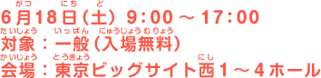

トップページ ＞ 一般公開の様子

“おもちゃで世界を笑顔に。”をテーマに、東京おもちゃショー2011の一般公開日がいよいよスタート！！
あいにくの梅雨空でしたが、お目当てのおもちゃを目指してたくさんのお客さまがご来場されました。
出展社ブースでは、おもちゃに触れて楽しめる体験会やミニステージなどのイベントがいっぱい！
今年の最新商品など、およそ3万5千点もの楽しいおもちゃたちが大集合！
商品の販売を行なっているブースもあるので、欲しいおもちゃが買えちゃうかも？！
おもちゃショー恒例のステージショーには、大人気のキャラクターたちが勢ぞろい！
また、いろんなおもちゃで遊べるキッズパークはおもちゃを使ったワークショップも開催中！
発表されたばかりの｢日本おもちゃ大賞2011｣受賞商品や、今年50回をむかえたおもちゃショーを記念した展示コーナー、こどもたちの生活を応援する様々な企業が集結した「キッズライフゾーン」などなど、さまざまなエリアで皆さん足をとめ、興味深く過ごしていただきました。